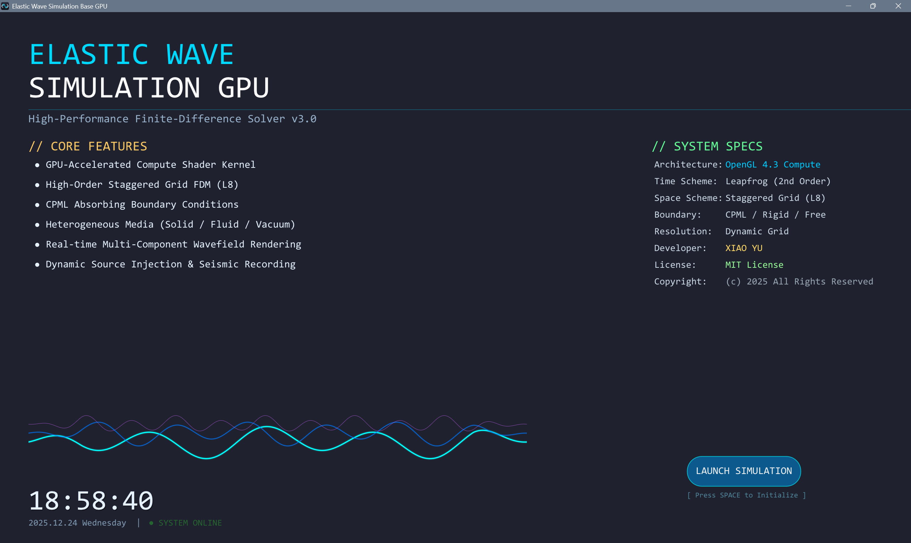
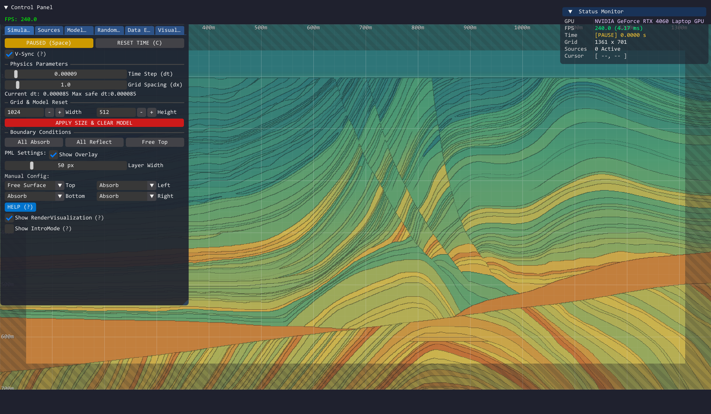
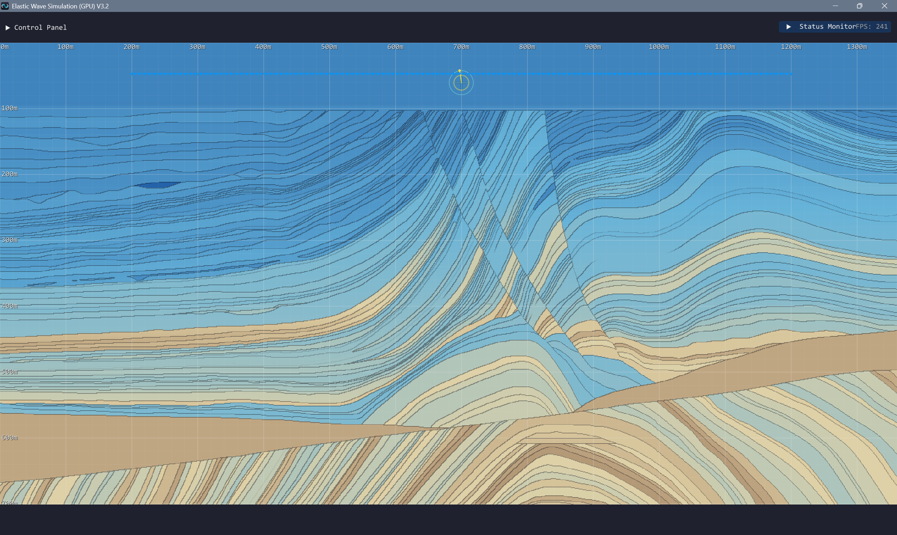
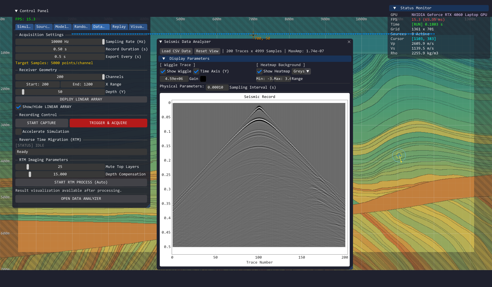
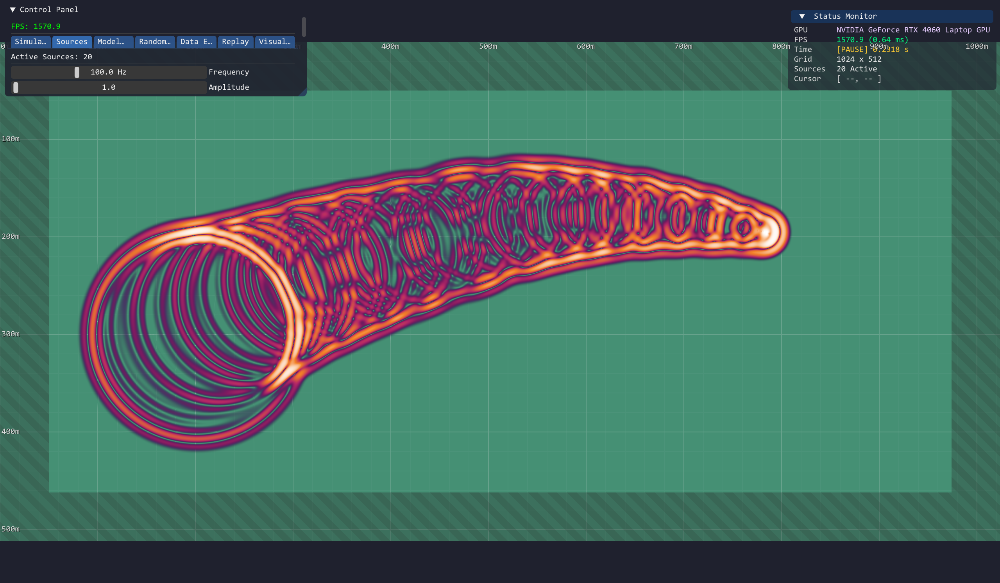
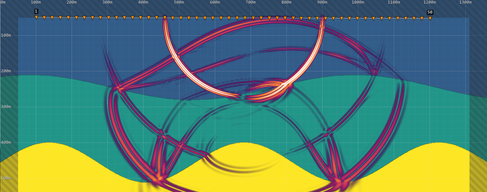

基于GPU Computer Shader的高性能弹性波场模拟软件
HPEW-Sim v3.0: High-Performance Elastic Wave Simulator
高性能二维弹性波动力学模拟(GPU Computer Shader)与可视化平台
简介
HPEW-Sim 是一款基于 GPU 原生并行架构的高性能二维弹性波动力学模拟软件。它采用空间 8 阶 / 时间 2 阶交错网格有限差分格式（FDTD），将数值频散降至理论极限。该软件支持实时修改介质属性（$V_p, V_s, \rho$），内置高精度合成地震记录系统，支持大规模阵列数据采集与导出。
HPEW-Sim 还支持多种可视化技术，包括速度/应力场切换、P/S 波场分离、实时频谱分析（FFT）、多种科学/艺术色谱。它还支持多种震源类型，包括单点脉冲、线震源、随机微震源、旋转定向力源（Tensor Rotation）。
HPEW-Sim 还具备稳定性保障，采用硬件级数值溢出检测（Explosion Detection）、自动熔断与参数修正等技术，确保模拟结果的可靠性。
HPEW-Sim 还支持模型导入/导出、地震数据SEGY格式导出、4K 序列帧录制、实时截图等功能，为地球物理勘探、地震学研究及波动物理教学提供一站式解决方案。
界面展示
欢迎页面

marmousi_model

sim_parmeter
marmousi_c2

data_analyse

marmousi_record_vz_snap
marmousi_record_vz
不同类型震源激发
鼠标连续激发

基于marmousi模型的正演模拟
检波器布设

1. 系统概述 (System Overview)
HPEW-Sim v3.0 是一款专为地球物理勘探、地震学研究及波动物理教学打造的下一代数值模拟平台。它采用 GPU 原生并行架构，突破了传统 CPU 串行计算的性能瓶颈，实现了百万级网格规模下的实时弹性波场模拟。
1.1 核心价值 (Core Value)
- 科研级精度: 空间 8 阶 / 时间 2 阶交错网格有限差分格式（FDTD），将数值频散降至理论极限。
- 交互式建模: 所见即所得的地质模型编辑系统，支持实时修改介质属性（$V_p, V_s, \rho$）。
- 工业级采集: 内置高精度合成地震记录系统，支持大规模阵列数据采集与导出。
- 艺术化呈现: 独创“梵高星空”流体渲染技术，将枯燥的物理数据转化为极具美感的视觉艺术。
1.2 关键特性清单 (Feature List)
| 模块 | 功能亮点 |
|---|---|
| 计算内核 | OpenGL 4.3 Compute Shader, 单帧并行处理 >1M 节点, 零拷贝渲染架构。 |
| 物理引擎 | 完整弹性波方程 (P+S波), CPML 吸收边界, 自由表面 (Free Surface), 刚性反射边界。 |
| 震源系统 | 单点脉冲, 线震源, 随机微震源, 旋转定向力源 (Tensor Rotation)。 |
| 可视化 | 速度/应力场切换, P/S 波场分离, 实时频谱分析 (FFT), 多种科学/艺术色谱。 |
| 数据 I/O | 模型导入/导出, 地震数据 CSV 导出, 4K 序列帧录制, 实时截图。 |
| 稳定性 | 硬件级数值溢出检测 (Explosion Detection), 自动熔断与参数修正。 |
2. 物理与数学原理 (Physics & Mathematics)
本系统求解的是二维非均匀、各向同性介质中的一阶速度-应力弹性波方程（Velocity-Stress Elastic Wave Equation）。
2.1 控制方程 (Governing Equations)
在二维笛卡尔坐标系 $(x, z)$ 下（对应软件中的 x 和 y，向下为正），方程组由牛顿第二定律（运动方程）和广义胡克定律（本构方程）组成：
A. 运动方程 (Momentum Equations):
描述质点加速度与应力梯度的关系：
B. 本构方程 (Constitutive Equations):
描述应力变化率与应变率（速度梯度）的关系：
参数定义:
- $v_x, v_z$: 质点振动速度矢量 (Velocity Vector)。
- $\sigma{xx}, \sigma{zz}$: 正应力分量 (Normal Stress)。
- $\sigma_{xz}$: 剪切应力分量 (Shear Stress)。
- $\rho$: 介质密度。
- $\lambda, \mu$: 拉梅常数 (Lamé parameters)，由纵波速度 $V_p$ 和横波速度 $V_s$ 导出：
- $\mu = \rho V_s^2$
- $\lambda = \rho V_p^2 - 2\mu$
2.2 高阶数值离散 (Numerical Scheme)
为了在有限算力下获得最高精度，系统采用了 交错网格 (Staggered Grid) 技术。
网格布局:
- 速度分量 $(vx, v_z)$ 与应力分量 $(\sigma{ij})$ 在空间上交错半个网格步长分布。
- 这种布局天然满足中心差分格式，具有更高的数值稳定性，且能自然处理泊松比差异大的介质界面。
空间 8 阶精度 (8th-Order Spatial Accuracy):
- 在计算空间导数时，利用目标点周围 8 个 网格点的信息进行加权求和。
- 差分算子: $\frac{\partial f}{\partial x} \approx \frac{1}{\Delta x} \sum_{n=1}^{4} C_n [f(x + \frac{2n-1}{2}\Delta x) - f(x - \frac{2n-1}{2}\Delta x)]$
- 系数: $C_1 \approx 1.19629, C_2 \approx -0.07975, C_3 \approx 0.00957, C_4 \approx -0.00069$。
- 优势: 相比传统的 2 阶或 4 阶精度，8 阶精度能显著抑制数值频散 (Numerical Dispersion)，使得波在长距离传播后依然保持清晰的波形，不发生畸变。
时间 2 阶精度 (Leapfrog Integration):
- 采用时间交错更新策略：$t$ 时刻更新速度 $\rightarrow$ $t+0.5$ 时刻更新应力 $\rightarrow$ $t+1$ 时刻更新速度。
2.3 边界条件 (Boundary Conditions)
- CPML / Cerjan 吸收边界 (Absorb):
- 在模拟区域四周设置具有指数衰减特性的海绵层（Sponge Layer）。
- 作用: 模拟无限大的地下空间，防止波传到网格边缘时产生非物理的人工反射。
- 自由表面 (Free Surface):
- 物理含义: 模拟地表与空气的交界处（空气无法对地面施加应力）。
- 实现: 通过镜像法强制上边界处的法向应力为零 ($\sigma{zz}=0, \sigma{xz}=0$)。
- 意义: 这是产生高能量 瑞利面波 (Rayleigh Wave) 的必要条件，也是很多简易模拟器所缺失的高级功能。
3. 用户操作手册 (User Manual)
3.1 界面概览 (Interface Layout)
界面遵循现代 macOS Dark 风格，分为三大功能区：
- 左侧控制面板 (Control Panel): 包含所有模拟参数、工具切换、数据采集设置。
- 中央视口 (Viewport): 实时渲染波场，支持鼠标交互。
- 右上角状态浮窗 (Overlay): 实时显示 FPS、模拟时间、鼠标位置的物理参数 ($V_p, V_s, \rho$)。
3.2 快捷键速查 (Shortcuts)
| 按键 | 功能 | 详细描述 |
|---|---|---|
| Space | 暂停 / 继续 | 冻结或恢复模拟时钟，方便观察波场细节。 |
| C | 清除波场 | 仅清空当前的波场数值，保留地质模型结构。 |
| Backspace | 完全重置 | 危险操作。清空波场并重置为默认的均匀介质模型。 |
| P | 截图 | 保存当前视口画面为 PNG 图片（不含 UI）。 |
| ↑ / ↓ | 增益调节 | 增加/减小波场显示的亮度系数 (Scale)，用于观察弱信号。 |
| Q | 切换波场样式 | 循环切换 Magma / Van Gogh / Coolwarm 等渲染风格。 |
| W | 切换模型样式 | 循环切换地质背景的显示风格（如地质填图、灰度密度等）。 |
| Esc | 返回欢迎页 | 暂停模拟并返回启动界面（低功耗模式）。 |
3.3 工具模式 (Tool Modes - 数字键 1-8)
| 键位 | 工具名称 | 鼠标左键操作 |
|---|---|---|
| 1 | Source (震源) | 点击放置单点震源 (Ricker Wavelet)。 |
| 2 | High Speed | 绘制高速介质（如基岩、花岗岩）。 |
| 3 | Low Speed | 绘制低速介质（如水体、疏松沉积物）。 |
| 4 | Wall | 绘制刚性反射壁（极高密度障碍物）。 |
| 5 | Eraser | 橡皮擦，恢复为背景介质。 |
| 6 | Array Tool | 检波器阵列工具（主要配合右键拖拽使用）。 |
| 7 | Rect Fill | 矩形填充：拖拽框选，松手后用指定参数填充该区域。 |
| 8 | Rect Select | 矩形选择：仅画框，不修改模型（用于为随机震源指定区域）。 |
4. 功能模块详解 (Feature Modules)
A. Simulation (模拟核心设置)
- Core Control:
RUNNING/PAUSED: 状态切换。RESET TIME: 仅将时间 $t$ 重置为 0，保留波场。
- Physics Parameters:
Time Step (dt): 时间步长。重要：8阶精度对 dt 敏感，若发生爆炸请减小此值。Grid Spacing (dx): 空间步长（米/像素）。
- Grid Size:
Width/Height: 设置网格分辨率。APPLY SIZE: 应用新尺寸并销毁当前模型。
- Boundary Conditions:
- 快捷按钮：
All Absorb(全吸收),All Reflect(全反射),Free Top(地表模式)。 PML Layer: 设置吸收层的厚度及是否显示辅助网格。
- 快捷按钮：
- Accelerate: 勾选后关闭垂直同步和画面渲染，让 GPU 全速跑物理计算（适合长时数据录制）。
B. Data Export (数据采集系统 - 核心)
用于生成合成地震记录（Seismogram）。
- Acquisition Settings:
Sampling Rate: 采样率（如 1000Hz = 0.001s 记一次）。Record Duration: 录制总时长（秒）。Target Samples: 系统自动计算预计生成的总点数。
- Receiver Geometry (检波器):
Channels: 检波器道数。X Range: 首道和尾道的横向坐标。Depth: 检波器埋深。DEPLOY LINEAR ARRAY: 点击后在画面生成蓝色倒三角图标。
- Recording Control:
START CAPTURE: 仅开始录制数据（不重置波场，用于接续录制）。TRIGGER & ACQUIRE(红色按钮): 一键自动化操作。- 清空当前所有波场。
- 在
Single Shot设定的位置激发一炮。 - 同步开始录制数据。
- 达到时长后自动停止并保存 CSV。
C. Random Source (随机震源/微震)
用于模拟微震活动或声发射实验。
- 切换到工具 8 (Rect Select)，在画面中框选一个区域（如断层带）。
- 点击面板上的
Snap to Rect Selection读取坐标。 - 设置
Total Shots（总次数）、Duration（持续时间）及频率/振幅范围。 - 点击
Start Generation，系统将在该区域内随机时空激发震源。
D. Visualization (可视化)
- Vis Mode:
Velocity Mag: 速度能量。P-Wave (Div): 仅显示纵波（散度场）。S-Wave (Curl): 仅显示横波（旋度场）。
- Wave Style:
Magma: 能量热力图。Van Gogh: 结合流线与厚涂质感的艺术风格（显示波前方向）。Coolwarm: 标准科学红蓝配色。
- Legend: 底部集成的色标，实时显示颜色对应的数值含义。
5. 典型工作流 (Workflows)
场景 A：合成地震记录生成 (Seismic Data Acquisition)
目标: 模拟一次地表主动源勘探，获取炮集记录。
- 建模: 使用矩形工具绘制地层结构，边界设为
Free Top。 - 设置: 在
Single Shot面板设置激发点坐标（如 X=500, Y=10）。 - 布设: 在
Data Export面板设置 100 道检波器，点击部署。 - 采集: 设置时长 1.5s，点击
TRIGGER & ACQUIRE。 - 结果: 等待进度条结束，在程序目录查看生成的
seismic_final.csv。
场景 B：复杂介质波场传播教学
目标: 演示波在非均匀介质中的反射、透射和绕射。
- 环境: 选择
Van Gogh风格，增益调至 50.0。 - 操作: 使用
Wall工具绘制障碍物（如空洞、隧道）。 - 激发: 使用
Source工具点击障碍物上方。 - 观察: 实时观察波前的反射、绕射及沿地表传播的瑞利波。
- 分析: 切换 Vis Mode 到
P-Wave或S-Wave，观察波场分离现象。
6. 故障排除 (Troubleshooting)
| 问题现象 | 可能原因 | 解决方案 |
|---|---|---|
| 屏幕突然变白 / 提示 EXPLODED | 数值爆炸 (CFL条件破坏)。 | 1. 减小 Time Step (dt)。2. 点击报警弹窗中的 Auto-Fix。3. 检查是否画了极高速度(>8000)的异常介质。 |
| 震源位置与鼠标点击不重合 | 坐标系 Y 轴未翻转。 | 软件内部已处理（UI左上角为0，物理左下角为0）。请确认未修改核心坐标转换代码。 |
| 导出的数据点数不足 (如1.0s断开) | 自动停止逻辑冲突。 | 请务必使用 Data Export 面板的 TRIGGER & ACQUIRE 按钮，它会自动接管并协调停止逻辑。 |
| 中文显示乱码 | 编码问题。 | 确保源码文件保存为 UTF-8 with BOM 格式，并正确加载了中文字体文件。 |
| 模拟速度慢 | 渲染开销过大。 | 在进行长时录制时，勾选 Accelerate 复选框，关闭画面渲染以加速计算。 |
7. 应用前景 (Applications)
- 石油与天然气勘探:
- 正演模拟 (Forward Modeling)：验证地质解释模型，辅助观测系统设计。
- 全波形反演 (FWI)：生成海量带标签的合成地震数据，用于算法测试或 AI 训练。
- 地震学研究:
- 地壳深部结构成像。
- 瑞利面波（Rayleigh Wave）频散特性研究。
- 工程与无损检测:
- 混凝土/金属构件超声波检测仿真。
- 隧道超前预报模拟。
- 数据驱动的 AI 训练:
- 快速批量生成地震数据，用于去噪、插值或反演网络的训练。
- 科学教育与艺术:
- 波动方程可视化教学。
- 生成具有物理美感的流体艺术动画。